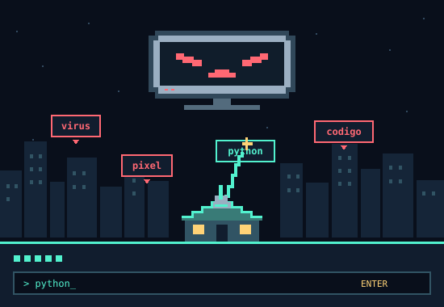
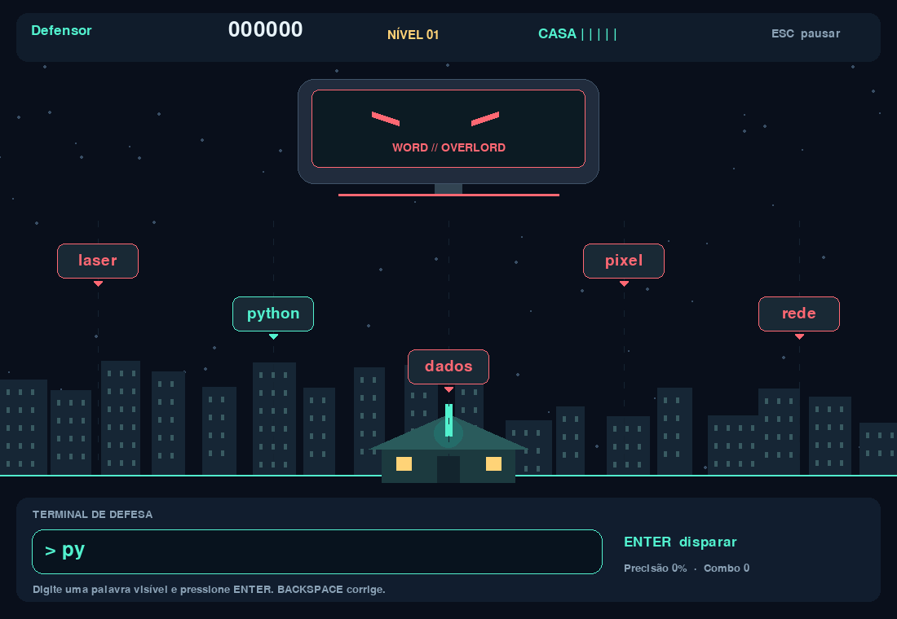

TRANSMISSÃO DE EMERGÊNCIA // SETOR 07
A cidade caiu.
Sua casa
ainda resiste.
Um computador gigante transformou palavras em armas. O governo entregou seu canhão laser. Agora, cada tecla é uma chance de defender o que é seu.
ASSUMIR A DEFESAWINDOWS 64 BITS · GRATUITO · JOGÁVEL OFFLINE

Ver captura da versão jogável atual

01 // PROTOCOLO DE SOBREVIVÊNCIA
O laser responde
às suas palavras.
Não precisa ser um herói. Precisa encontrar a palavra certa antes que ela alcance sua casa.
- 01
Identifique a ameaça
Palavras digitais caem em cinco corredores. Escolha uma que esteja na tela.
- 02
Digite. Pressione Enter.
A palavra correta dispara o laser. Use Backspace para corrigir e Esc para pausar.
- 03
Mantenha a casa de pé
Você tem cinco pontos de integridade. Acerte em sequência para multiplicar os pontos; a cada cinco acertos, o nível aumenta.
02 // REGISTRO DE RESISTÊNCIA
Defensores da cidade.
Conectando ao registro da cidade...
| POSIÇÃO | DEFENSOR | PONTOS | PRECISÃO | NÍVEL |
|---|
O jogo mantém um ranking local. O ranking compartilhado depende do servidor configurado e disponível.
03 // KIT DE DEFESA DISPONÍVEL
Sua próxima arma
já está na sua mesa.
Baixe a prévia, escolha seu nickname e proteja sua casa. O jogo inclui tudo para começar: você não precisa instalar Python.
BAIXAR PARA WINDOWS ↘Versão 0.1.0 · Windows 64 bits · extraia o ZIP e abra WordsAtack.exe.